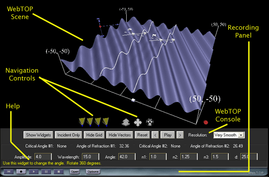
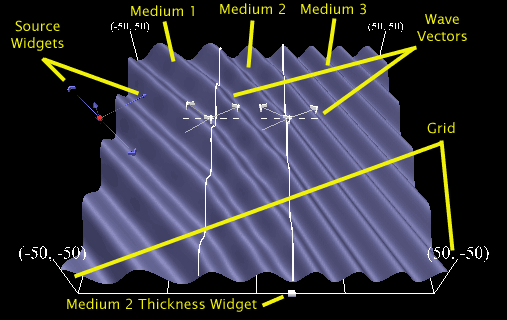
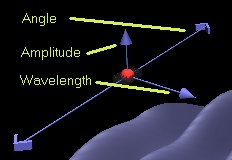
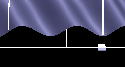

Reflection and Refraction - Waves Three Media: Directions
Under normal operation, your WebTOP window should look like the following:

The WebTOP window has four parts. The top portion is the active WebTOP scene.
The second portion is the VRML Navigation controls.
The third portion, the console, contains a message line that provides help on the operation of the Widgets and keyboard entry boxes.
The fourth portion is the recording panel that allows you to record and replay WebTOP sessions. You may scroll down to read on, or
select the appropriate link from the following items:
How To Change Parameters
When you start the module, you should see a figure similar to this:

The parameters that you can change are the amplitude,
the wavelength, the width of
Medium 2, the angle of the incident wave,
and the indices of refraction of the three media. These parameters can be changed by manipulating the provided widgets and by using the WebTOP console. The console also allows you to hide/show the widgets,
the wave vectors and the Grid. You may view the animation is Static mode (the default) and use the forward '>' and backward '<' buttons to step forward or backward in time or Animation mode.
For Medium 1, you can view the resulting wave pattern or just view the incident
or reflected wave.
Module Widgets:
The widgets for the line source and for changing the width of Medium 2 are shown in the following
Figures:
|  |
 |
| Source Widgets |
Medium 2 Thickness Widget |
To change a parameter, you need to position your cursor over the proper
widget. Labels on the widget figures, shown above, identify each of the widgets. Once you have placed the cursor over the widget, the cursor changes shape.
If you click on the left mouse button, a message explaining the operation
of the widget appears at the help portion of the module console.
Selecting a Widget:
Position the cursor over a source to activate its widgets. You may need to toggle the Show Widgets button. We advise that you manipulate the Widgets while the module
is in static mode.
Changing the Wave Amplitude:
Once you select the widget, drag the cursor up to increase the
amplitude and down to decrease it. The operation of this widget is the same
for both types of sources.
Changing the Wavelength of the Source:
For line sources, drag the arrow outward (from the widget controls) to
increase the wavelength and inward to decrease it.
Changing the Angle of the
Source (Angle of Incidence):
Once you select the
widget, rotate it left of right to get to the desired angle.
Changing the
width of Medium 2:
Once you select the
widget, drag it to the left or right to decrease or increase the Medium
thickness.
Using the
WebTOP Console:
You may use the WebTOP console to change source parameters and to
control the scene. You need to press the enter key after you change each of the
parameters. As shown in the following Figure, the parameters input boxes are
available at the bottom of the control panel just above the context sensitive
help.
|